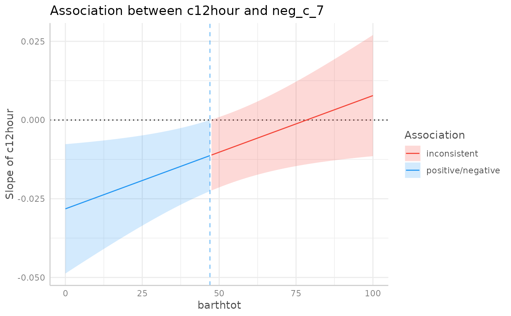

Spotlight-analysis: Create Johnson-Neyman confidence intervals and plots
Source:R/johnson_neyman.R
johnson_neyman.RdFunction conduct a spotlight-analysis to create so-called
Johnson-Neyman intervals. The plot() method can be used to visualize the
results of the Johnson-Neyman test.
Arguments
- x
An object of class
ggeffects, as returned by the functions from this package.- precision
Number of values used for the range of the moderator variable to calculate the Johnson-Neyman interval. This argument is passed down to
pretty(..., n = precision). Usually, the default value of 500 is sufficient. Increasing this value will result in a smoother plot and more accurate values for the interval bounds, but can also slightly increase the computation time.- p_adjust
Character vector, if not
NULL, indicates the method to adjust p-values. Seestats::p.adjust()orstats::p.adjust.methodsfor details. Further possible adjustment methods are"tukey"or"sidak", and forjohnson_neyman(),"fdr"(or"bh") and"esarey"(or its short-cut"es") are available options. Some caution is necessary when adjusting p-value for multiple comparisons. See also section P-value adjustment below.- ...
Arguments passed down to
test_predictions()(and then probably further tomarginaleffects::slopes()). See?test_predictionsfor further details.- colors
Colors used for the plot. Must be a vector with two color values. Only used if
show_association = TRUE.- show_association
Logical, if
TRUE, highlights the range where values of the moderator are positively or negtatively associated with the outcome.- show_rug
Logical, if
TRUE, adds a rug with raw data of the moderator variable to the plot. This helps visualizing its distribution.- verbose
Show/hide printed message for plots.
Value
A data frame including contrasts of the test_predictions() for the
given interaction terms; for plot(), returns a Johnson-Neyman plot.
Details
The Johnson-Neyman intervals help to understand where slopes are significant
in the context of interactions in regression models. Thus, the interval is only
useful if the model contains at least one interaction term. The function
accepts the results of a call to predict_response(). The first and the
last focal term used in the terms argument of predict_response() must
be numeric. The function will then test the slopes of the first focal terms
against zero, for different moderator values of the last focal term. If only
one numeric focal term is given, the function will create contrasts by levels
of the categorical focal term. Use plot() to create a plot of the results.
To avoid misleading interpretations of the plot, we speak of "positive" and "negative" associations, respectively, and "no clear" associations (instead of "significant" or "non-significant"). This should prevent the user from considering a non-significant range of values of the moderator as "accepting the null hypothesis".
P-value adjustment for multiple comparisons
Note that p-value adjustment for methods supported by p.adjust() (see also
p.adjust.methods), each row is considered as one set of comparisons, no
matter which test was specified. That is, for instance, when test_predictions()
returns eight rows of predictions (when test = NULL), and p_adjust = "bonferroni",
the p-values are adjusted in the same way as if we had a test of pairwise
comparisons (test = "pairwise") where eight rows of comparisons are
returned. For methods "tukey" or "sidak", a rank adjustment is done
based on the number of combinations of levels from the focal predictors
in terms. Thus, the latter two methods may be useful for certain tests
only, in particular pairwise comparisons.
For johnson_neyman(), the only available adjustment methods are "fdr"
(or "bh") (Benjamini & Hochberg (1995)) and "esarey" (or "es")
(Esarey and Sumner 2017). These usually return similar results. The major
difference is that "fdr" can be slightly faster and more stable in edge
cases, however, confidence intervals are not updated. Only the p-values are
adjusted. "esarey" is slower, but confidence intervals are updated as well.
References
Bauer, D. J., & Curran, P. J. (2005). Probing interactions in fixed and multilevel regression: Inferential and graphical techniques. Multivariate Behavioral Research, 40(3), 373-400. doi: 10.1207/s15327906mbr4003_5
Esarey, J., & Sumner, J. L. (2017). Marginal effects in interaction models: Determining and controlling the false positive rate. Comparative Political Studies, 1–33. Advance online publication. doi: 10.1177/0010414017730080
Johnson, P.O. & Fay, L.C. (1950). The Johnson-Neyman technique, its theory and application. Psychometrika, 15, 349-367. doi: 10.1007/BF02288864
McCabe CJ, Kim DS, King KM. Improving Present Practices in the Visual Display of Interactions. Advances in Methods and Practices in Psychological Science. 2018;1(2):147-165. doi:10.1177/2515245917746792
Spiller, S. A., Fitzsimons, G. J., Lynch, J. G., & McClelland, G. H. (2013). Spotlights, Floodlights, and the Magic Number Zero: Simple Effects Tests in Moderated Regression. Journal of Marketing Research, 50(2), 277–288. doi:10.1509/jmr.12.0420
Examples
# \dontrun{
data(efc, package = "ggeffects")
efc$c172code <- as.factor(efc$c172code)
m <- lm(neg_c_7 ~ c12hour * barthtot * c172code, data = efc)
pr <- predict_response(m, c("c12hour", "barthtot"))
johnson_neyman(pr)
#> The association between `c12hour` and `neg_c_7` is negative for values
#> of `barthtot` lower than 47. There were no clear associations for values
#> of `barthtot` higher than 47.
plot(johnson_neyman(pr))
#> The association between `c12hour` and `neg_c_7` is negative for values
#> of `barthtot` lower than 47. There were no clear associations for values
#> of `barthtot` higher than 47.

pr <- predict_response(m, c("c12hour", "c172code", "barthtot"))
johnson_neyman(pr)
#> # Level `c172code = 1`
#> The association between `c12hour` and `neg_c_7` is negative for values
#> of `barthtot` lower than 47. There were no clear associations for values
#> of `barthtot` higher than 47.
#>
#> # Level `c172code = 2`
#> The association between `c12hour` and `neg_c_7` is positive for values
#> of `barthtot` higher than 33.80. There were no clear associations for
#> values of `barthtot` lower than 33.80.
#>
#> # Level `c172code = 3`
#> There are no clear negative or positive associations between `c12hour`
#> and `neg_c_7` for any value of `barthtot`.
plot(johnson_neyman(pr))
#> # Level `c172code = 1`
#> The association between `c12hour` and `neg_c_7` is negative for values
#> of `barthtot` lower than 47. There were no clear associations for values
#> of `barthtot` higher than 47.
#>
#> # Level `c172code = 2`
#> The association between `c12hour` and `neg_c_7` is positive for values
#> of `barthtot` higher than 33.80. There were no clear associations for
#> values of `barthtot` lower than 33.80.
#>
#> # Level `c172code = 3`
#> There are no clear negative or positive associations between `c12hour`
#> and `neg_c_7` for any value of `barthtot`.

# robust standard errors
if (requireNamespace("sandwich")) {
johnson_neyman(pr, vcov = sandwich::vcovHC)
}
#> # Level `c172code = 1`
#> The association between `c12hour` and `neg_c_7` is negative for values
#> of `barthtot` lower than 42.20. There were no clear associations for
#> values of `barthtot` higher than 42.20.
#>
#> # Level `c172code = 2`
#> The association between `c12hour` and `neg_c_7` is positive for values
#> of `barthtot` higher than 37.20. There were no clear associations for
#> values of `barthtot` lower than 37.20.
#>
#> # Level `c172code = 3`
#> There are no clear negative or positive associations between `c12hour`
#> and `neg_c_7` for any value of `barthtot`.
# }